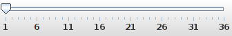
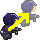
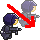
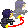
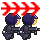

Orx Animation Editor Help
Enis Bayramoglu (enobayram)
September 29, 2012
This help system is meant to fill the need for a minimal help support for the Orx Animation Editor. I reckon that as the editor complexity increases,
we'll probably end up using a more advanced help browser, but for now, I hope this will suffice.
I'm planning to update this document as new features are added, but if you notice that it's outdated, please inform me (enobayram) on the Orx forums.
The Orx Animation Editor has been created with a hope to satisfy the need for minimal animation editing without touching Orx config files. As nice as
config files might be, they're a bit cumbersome for specifying sprite animations and animation sets. I imagine they must also be cumbersome for skeletal
animations, but they are, as of now, out of scope of this editor, since much more professional programs (like Spriter) are under development for that purpose. Unless the duplicated (and hard) work for skeletal animations is justified, I am planning to stick to the mentioned minimal scope.
The editor always has to have an active project at any given time. This is needed in order to ensure that any referenced files have a relative base location. The project
file marks that base location. The intention is to be able to bundle the project file with the rest of an Orx based project and retain the ability to move the bundle together accross file systems.
In summary, this dialog forces you to create a new animation project or open an existing one before you can do anything else.
Choose a new file to be your animation project file. If you don't specify any extension (which you are encouraged not to), the default extension is .oap. As of now, I've
only tested the case when the animation project file resides in a common ancestor folder of the target .ini file and the referenced image files, so you're encouraged to
do the same.
As the name suggests...
One thing to note here is that I'm trying to keep the saved projects forward compatible. If you have any compatibility problems with a most recent version, please let me know.
Animation Manager
The animation manager is used to create, delete and copy animations and frames. The selected object (animation or frame) is also watched by the Frame Editor and the
Animation Viewer views.
The two buttons and are used to create a new animation and a new frame respectively. Note that
in order to create a new frame, you need to select an animation or an existing frame first. The frame will be appended to the selected animation or it will be
inserted after the selected frame.
- Ctrl+C/V
- The animation manager supports Ctrl+C -> Ctrl+V to copy and paste animations and frames. Note that, trying to copy a combination of animations and frames ignores the selected frames. So you can either copy a set of animations, or a set of frames (into another animation)
- Del
- This will delete the current selection
- Space
- When a frame is selected, pressing Space will jump the frame editor to the image referenced by that frame.
The items in the animation manager can be dragged and dropped to the other views, the following takes place when one does so:
Animation Manager Itself: The frames and animations are moved or copied (CTRL pressed) around.
Frame Editor: The image files attached to the dropped frames (and the frames of the dropped animations) are opened.
Animation Viewer: The dropped frames and animations enter the display queue.
Animation Set Editor: The dropped animations are added to the animation set (if they aren't already a part of it).
The animation viewer displays the animations and the frames listed in the animation queue as a sequence, respecting the frame offsets. If the queue is empty, it displays the currently selected animations and frames.
The display can be zoomed (with the mouse wheel) and panned (by left-click and dragging).
The frame editor is currently used to set the following properties of the last selected frame:
- the image file
- the frame rectangle
- the pivot
- the offset (A non-standard property, needs to be handled by custom code)
All the editing activity is performed via mouse right-click (and drag). The tools on the frame editor toolbar determine the editing behavior. The frame editor toolbar is currently composed of the snap slider, and the toggle buttons for setting the editing mode:
- :
- This slider allows to set the grid size (in pixels) for snapping, while a frame rectangle is being drawn.
- :
- Set the rectangle editing mode. The rectangle for the selected frame can be specified. (uses click and drag)
- :
- This button is enabled when a frame with a valid rectangle is selected. This button locks the currently selected rectangle to be reused in other frames.
- :
- Enables the pivot editing mode.
- :
- Enables the basic offset editing mode. In this mode, the offset for the currently selected frame can be set as from an arbitrary point to the current pivot.
- :
- Enables the relative position offset editing mode. In this mode, the offset for the currently selected frame can be set as the relative position between two arbitrary points. (uses click and drag)
- :
- This button is enabled only when exactly two frames are selected and they both have a valid rectangle defined. This button enables the most advanced way of setting the frame offset. Among the two selected frames, the primary selection (last selected) is regarded as the current frame, and the other is regarded as the previous frame. The user chosses a point in the previous frame and one in the current frame. The offset is then set, such that the two
points end up on top of each other in the frame sequence.
It is possible to zoom in the Frame Editor using the mouse wheel.
In the Animation Set Editor, it is possible to:
- Create new animation sets / Delete them
- Add animations to an existing animation set / remove them
- Create/Remove links between animations
- Visually organize animations in the Animation Set Editor view.
- Set the property of an animation link to be "immediate"
- :
- Create a new animation set.
- :
- Delete the current animation set.
- :
- Add an animation to the current animation set.
- :
- Set the currently selected animation link property as "immediate".
In order to create a link, first select the source animation by left-clicking on it. Then, select the target animation again by left-clicking on it. This way, a new
link will be created, and it will be the current selection. In order to select an already existing link, repeat the previous steps as if you're creating it from scratch,
no new links will be created, the already existing one will be selected.
The animation icons in the Animation Set Editor view can me dragged around by right-clicking on an icon and dragging.
The file menu is used to manipulate animation projects, set the target config file, set the root folder for relative image paths, write to the target config file and open a new image in the frame editor.
- The project file IS NOT saved incrementally after each operation inside the editor. One needs to save it as needed. There is also a prompt to save
the project before closing the editor or switching projects.
- The project root folder defines the root folder for the image paths written to the target config file. If the root folder is not specified, the folder that the target config file resides will be used as the root folder.
Currently, the edit section has utilities for editing the selected frames. It is possible to increase/decrease frame key durations as well as flip the keys in x/y
axes using the items in the Edit menu.
The help menu is only used to view this document at the moment.
Orx Animation Editor Help
This document was generated using the
LaTeX2HTML translator Version 2008 (1.71)
Copyright © 1993, 1994, 1995, 1996,
Nikos Drakos,
Computer Based Learning Unit, University of Leeds.
Copyright © 1997, 1998, 1999,
Ross Moore,
Mathematics Department, Macquarie University, Sydney.
The command line arguments were:
latex2html help.tex -no_navigation -split 0
The translation was initiated by Enis Bayramoglu on 2012-09-29
Enis Bayramoglu
2012-09-29